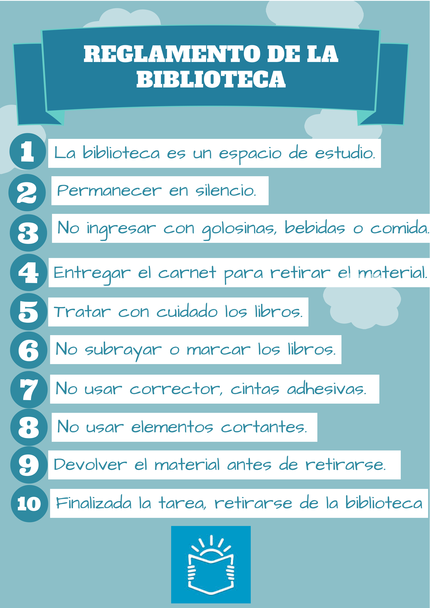

¿Qué es un reglamento?
Se llama reglamento a un documento emitido por algún tipo de autoridad, en el que se expresa una normativa. La misma puede ser jurídica, social, política o de cualquier otra naturaleza, y los integrantes de una comunidad deben someterse a ella.
Los reglamentos surgen de las instituciones de una comunidad y rigen la paz social dentro de la misma, es decir, previenen y brindan resoluciones posibles a los conflictos que surjan entre los miembros que la componen.
Muchos reglamentos poseen rango legal nacional y expresan leyes cuyo desacato puede conducir a castigos ejemplares como la cárcel. Otros en cambio tienen áreas de acción más definidas y locales, como un club, un parque o un juego de mesa, y aplican únicamente a dichos ámbitos.
Contenido de un reglamento
Los reglamentos contienen, en esencia, normas.
Estas son directrices, mandamientos, restricciones y, eventualmente, sanciones aplicables a quienes no cumplan con dichos mandatos.
Se trata de textos normativos, que imponen a un grupo humano un código de conducta o de desempeño, que al ser común a todos permite la interacción social pacífica.
Tipos de reglamento
A grandes rasgos podemos pensar dos tipos de reglamentos:
Generales. Aquellos que plantean un marco amplio de normas y conductas a seguir. No enfatizan detalles o particularidades, sino que plantean unas reglas de juego aplicables a un ámbito específico. Por ejemplo, un reglamento general del orden público.
Internos. Los reglamentos internos son propiedad de una empresa, organización o club de cualquier tipo. Son sólo aplicables (y reveladas) a quienes hacen vida en dicha organización, ya que su ámbito de acción es reducido y local. Por ejemplo, un reglamento interno de debates de una Asamblea Nacional.
¿Como hacer un reglamento?
I. Exposición de motivos explicación corta del origen de la organización
y la necesidad de redactar unas normas de ley y orden para la
convivencia entre los integrantes.
II. Propósito Es la intención que se tiene con la organización
III. Nombre o título del reglamento
IV. Definiciones Es opcional y se utiliza para aclarar conceptos, y que
todos los miembros tengan el mismo significado.
V. Alcance Hasta que punto o límite va a llegar el reglamento, sin infligir
otros reglamentos y leyes superiores
VI. Base Legal Reglamentos, leyes, acuerdos sirven de base para tomar de
ejemplo en la estructura y parte de estos, que coincidan con los objetivos
de la organización
VII. Directiva o Junta Es el cuerpo a dirigir, administrar la organización un
periodo de tiempo definido
VIII. Funciones de los puestos en la Directiva o Junta Son los deberes
con los que tienen que cumplir los miembros de ésta para el bienestar de
los integrantes y la organización
IX. Derecho y deberes de los integrantes de la organización es la
responsabilidad y los beneficios que tiene la persona al formar parte de la
organización y las responsabilidades que esto conlleva
X. Asamblea y reuniones son los organismos parlamentarios para
informar, determinar diferentes aspectos o situaciones de la organización
o de su contorno
XI. Quórum Número mínimo de integrantes presentes para iniciar
formalmente una reunión y que los acuerdos tengan validez.
XII. Medidas disciplinarias Son las norma que se aplicarán aquel o
aquellos que no cumplan con el reglamento o compromisos acordados
XIII. Enmiendas son aquellos cambios que al paso del tiempo se le quieren
hacer al reglamento. Conlleva presentar las enmiendas, hacer vistas y
luego llevarlas a votación en asamblea general de los miembros activos.
XIV. Página fina Será la certificación donde se indica fecha de la asamblea
de aprobación de las enmienda o reglamento, lugar donde se aprobó el
reglamento o las enmiendas. la certificación será firmada por el
presidente y la secretaria.
Ejemplo

Para continuar aprendiendo mas has clik.